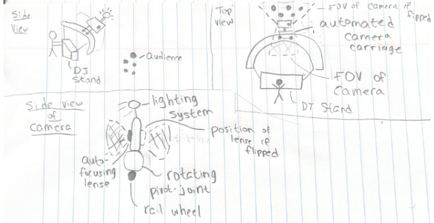
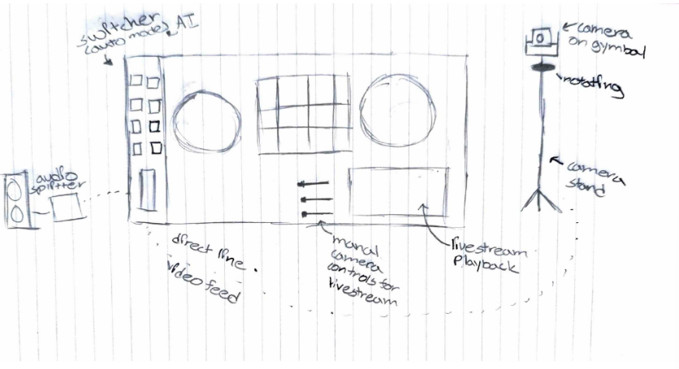
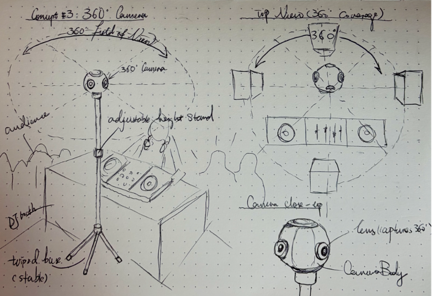
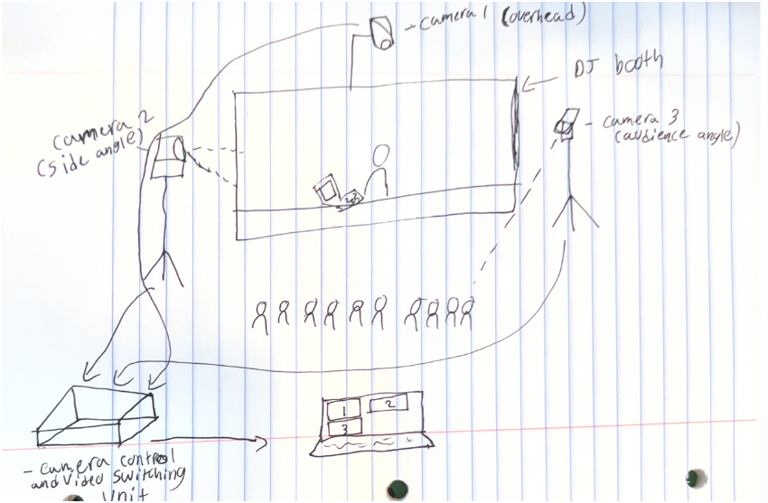
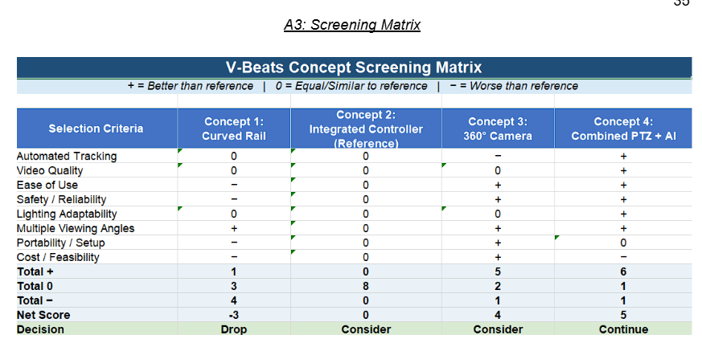
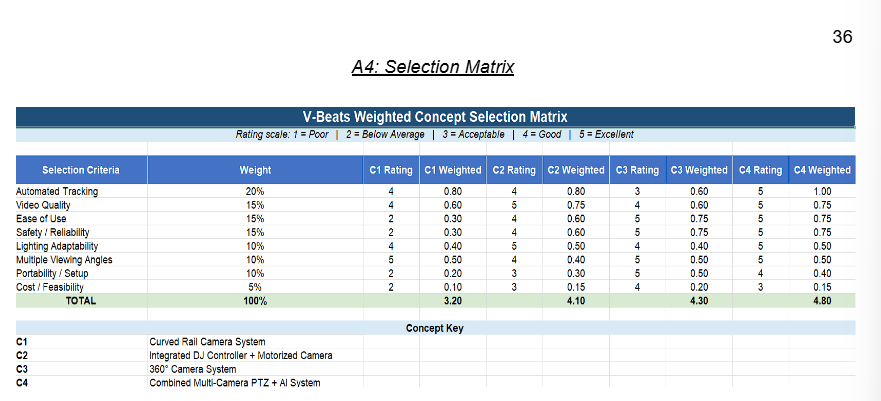

The Video & Broadcast Entertainment Automated Tracking Suite is a Mechanical Engineering Senior Design project sponsored by Terrence Dean, a live performance professional with years of experience in the entertainment industry.
This project aims to develop an intelligent camera tracking system capable of automatically capturing performers during live events with minimal human intervention.
By eliminating the need for dedicated camera operators, the system seeks to provide DJs, musicians, and content creators with a cost-effective method of producing professional-quality livestreams and recordings.
Automatically detect and follow performers during live events without requiring continuous operator control.
Enable independent creators to deploy the system themselves without technical production crews.
Deliver professional video coverage traditionally requiring several camera operators.
Coordinate multiple cameras to capture performers, audiences, and venue environments.
Use automated tracking logic to maintain subject framing throughout a performance.
Real-time camera adjustments reduce the need for production personnel.
Designed to support livestreaming and broadcast workflows.
SENIOR DESIGN · PROJECT DEVELOPMENT
Explore the research, user needs, concepts, engineering plans, and project resources guiding the V-BEATS design.
PHASE 1 · 01
Our review explored commercial cameras and academic research that use automated tracking and camera movement. These examples show useful approaches for filming performers and switching views during live events.
The AVer TR313V2 is a professional 4K pan-tilt-zoom camera, listed at approximately $1,800. It can follow a presenter, track movement through preset zones, or combine both modes. Its multiple video connections also make it suitable for broadcast software such as OBS.
For V-BEATS, presenter tracking could keep the DJ in frame, while preset zones could provide views of the DJ booth, turntables, and audience. A future system could build on this idea by choosing views based on audio or crowd activity, rather than movement alone.
The OBSBOT Tail 2 is a 4K camera designed for livestreamers and solo performers. It offers AI subject tracking, automatic zoom, low-light image features, and a rotating camera body for vertical video. It can also stream over a network. Its listed price is approximately $1,199.
Its low-light features are relevant to dim venues, and network video could reduce cable clutter. However, the cost of complete cameras may be high for our project. We can use these products as references while focusing our design on the tracking, camera movement, and video features our DJ system needs.
Academic research from Hiroshima University describes a tracking system that uses mirrors and a fast-moving mirror controller to redirect one camera’s view. The system alternates between two views and processes target movement at high speed.
Although V-BEATS does not need such extreme speed, this research demonstrates how camera movement and view changes can be coordinated. It also suggests future ways to trigger camera changes using audio peaks, beat timing, or lighting cues.
Existing systems show that automated tracking, preset viewing zones, low-light performance, and responsive camera movement can improve live video. V-BEATS will use these ideas to guide a practical two-camera system for following the DJ and capturing the audience.
PHASE 1 · 02
Examine how V-BEATS could serve DJs, musicians, venues, and independent creators who need engaging video coverage without a dedicated camera crew.
PHASE 1 · 03
V-BEATS is intended to give DJs and other performers polished live video without requiring a camera crew. The sponsor is the primary stakeholder; performers are also users, while in-person and livestream audiences are secondary stakeholders.
The needs below summarize sponsor and user priorities. Priority is rated from 1 (lower) to 5 (higher).
| Category | ID | Need / Want | Priority |
|---|---|---|---|
| Safety | S1 | Operate safely around the DJ and audience | 5 |
| Safety | S2 | Do not impede the performance or the DJ’s or audience’s field of view | 5 |
| Cost | C1 | Be cost-effective | 1 |
| Performance | P1 | Automatically track the DJ and audience simultaneously | 5 |
| Performance | P2 | Provide clear, high-quality video | 5 |
| Performance | P3 | Allow manual switching between camera angles | 3 |
| Performance | P4 | Switch between camera angles automatically | 5 |
| Performance | P5 | Support a live-streaming environment | 4 |
| Performance | P6 | Be usable independently | 5 |
| Performance | P7 | Create clips for social media | 3 |
| Performance | P8 | Record video viewable at a minimum resolution of 4K | 5 |
| Performance | P9 | Operate continuously for at least 5 hours | 3 |
| Performance | P10 | Be practical and easy to operate | 5 |
| User Experience | U1 | Be relatively easy to set up and use | 5 |
| User Experience | U2 | Require no more than one person to set up and use | 4 |
| User Experience | U3 | Maintain acceptable camera quality during performances | 5 |
| User Experience | U4 | Be portable | 3 |
| Features | F1 | Incorporate with lasers and stage lights | 2 |
| Features | F2 | Consider a 360-degree camera | 3 |
| Features | F3 | Adapt to different lighting environments | 5 |
These draft specifications turn selected needs into measurable targets. “Limit” values are reproduced from the project table and should be confirmed by the team.
| Need ID | Metric | Target | Limit | Priority | Units |
|---|---|---|---|---|---|
| P1 | Tracking accuracy of point of interest | >95% | >85% | 5 | % |
| P2 | DJ and audience streaming | Streamed simultaneously | Captured together during performance | 4 | — |
| P3, P8 | Frame rate | >60 | >30 | 3 | fps |
| P9 | Video resolution | >4K | >1080p | 5 | p |
| P10 | Operating time | >4 | >1 | 5 | hours |
| P4, P5 | Camera switching delay | >1 | >2 | 3 | seconds |
| P6 | Live-streaming | Continuous with performance | Livestreamed with delay | 3 | — |
| U4 | DJ input | 0 | <5 | 5 | inputs |
| U5 | System weight | <30 | <100 | 3 | lbs |
| U1 | Setup time | <10 | <20 | 4 | minutes |
| P1, P3 | Autofocus time | <1 | <2 | 5 | seconds |
| U2, P7 | Operators needed | 0 | <1 | 5 | people |
| C1 | Cost | <$5,000 | <$10,000 | 2 | USD |
| F3 | Lighting quality | >500 | >300 | 5 | lux |
Draft review: Confirm the need-ID mappings before baselining the specifications. For example, P9 and P10 refer to different metrics in the two tables, and U5 appears in the specifications but not in the needs table.
The team also developed a Quality Function Deployment (QFD) matrix to compare customer needs with engineering specifications and help prioritize concept development. The detailed matrix is included in the appendix.
PHASE 1 · 04
The team brainstormed options for the camera system, lighting, focus, camera movement, controls, and added features. These alternatives can be compared against the customer needs and specifications to select a practical V-BEATS design.
| Design Area | Options to Consider |
|---|---|
| Camera System | 1 camera2 cameras3 camerasPTZ camera360-degree camera |
| Lighting Options | LED light barRing light barDynamic exposure and lighting adjustment |
| Focusing Options | Manual focusAutofocus |
| Camera Movement or Mounting | Fixed mountCurved rail systemTilting baseRotating platform |
| Camera Control Method | Buttons on DJ boothSoftware controlAutomated AI controlSwitch between cameras |
| Added Features | Live streamingSplit-screen viewingAudience trackingCamera-angle switching |




The screening matrix compares four concepts with the integrated controller concept as the reference. The weighted matrix then scores each concept against criteria such as tracking, video quality, safety, setup, and cost.


Selection outcome: The matrices identify the combined multi-camera PTZ + AI system as the leading concept to continue developing.
PHASE 1 · 05
Define the analyses and design work needed to verify that the proposed system can move, mount, power, and operate its cameras reliably during a performance.
PHASE 1 · 06
Track the planned engineering outputs and equipment costs needed to build, integrate, and demonstrate the V-BEATS prototype.
Many independent performers do not have access to professional production teams. Current livestreaming solutions often depend on multiple operators and expensive equipment.
Our goal is to democratize live-event broadcasting by providing an automated solution that gives creators access to professional production quality without the complexity and expense of a full production crew.